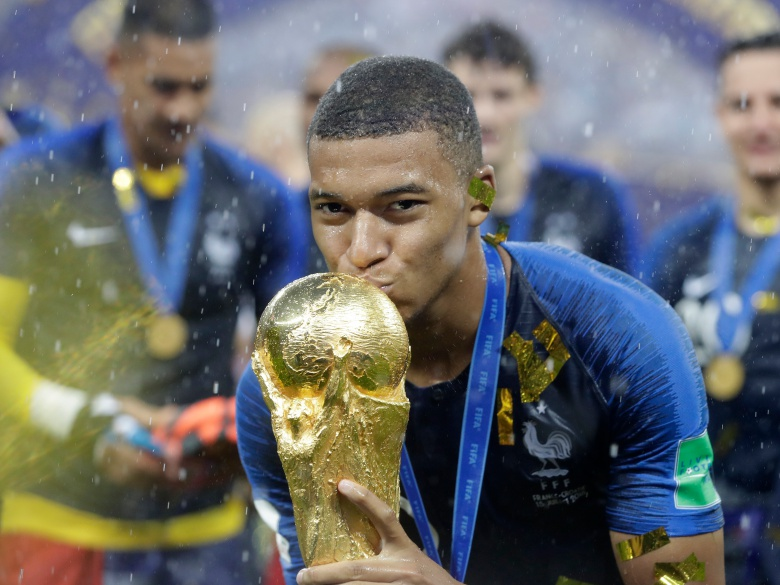
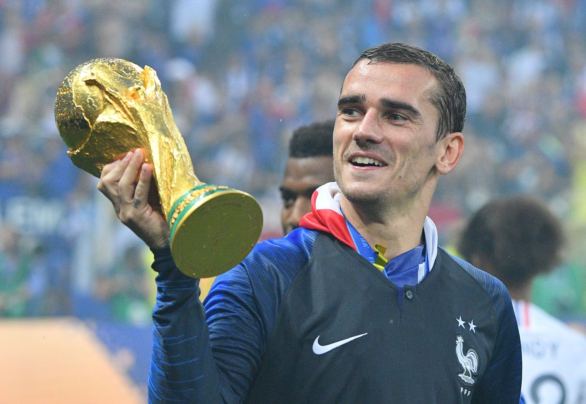
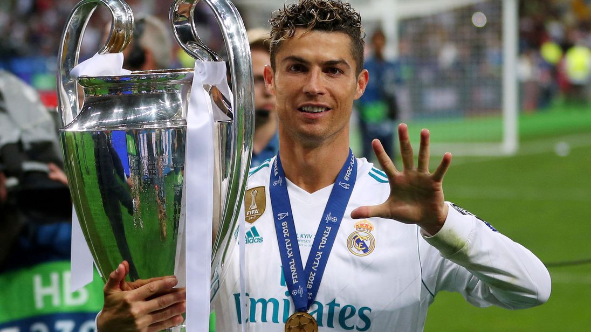

kylian Mbappe
HE IS A RISING STAR
Kylian Mbappé Lottin (French pronunciation: [kiljan (ɛ)mbape lɔtɛ̃]; born 20 December 1998) is a French professional footballer who plays as a forward for Ligue 1 club Paris Saint-Germain and the France national team. He is considered the world's most expensive player from a transfer value perspective by the CIES.
CAREER
Mbappé came into prominence at an early age, starring for the youth academy at Bondy before gaining a move to Monaco, where he made his professional debut in 2015, aged 16. Mbappé then quickly established himself as a regular goalscorer for the first team in the 2016–17 season, as he helped the club gain their first Ligue 1 title in seventeen years. A year later, he transferred to Paris Saint-Germain for €180 million, making him the most expensive teenager, and the world's second-most expensive player.[4] In his debut season in the French capital, Mbappé featured heavily as the club captured a domestic treble of Ligue 1, Coupe de France, and Coupe de la Ligue.
Mbappé made his senior debut for France in 2017. At the 2018 FIFA World Cup, Mbappé became the youngest French player to score at a World Cup,[5] and became the second teenager, after Pelé, to score in a World Cup final
He finished as the joint second-highest goalscorer as France won the tournament, and received the Best Young Player Award for his performances.
Antoine Griezmann
HE IS A SUPERSTAR
Antoine Griezmann (French pronunciation: [ɑ̃twan ɡʁijɛzman];[3] born 21 March 1991) is a French professional footballer who plays as a forward for Atlético Madrid and the French national team.
CAREER
Griezmann began his senior career as a member of Spanish side Real Sociedad in 2009, with whom he won the Segunda División title in his first season. He departed five seasons later to join Atlético Madrid for a then-club record €30 million. Although featuring mostly as a winger during his time with Sociedad, Griezmann adapted his game in Madrid to become a complete forward, and quickly became the focal point of the team. He would go on to break the club's scoring record for a debut season, and was named in the 2014–15 La Liga Team of the Season. He was also named La Liga Best Player in 2016, nominated for both the 2016 Best FIFA Men's Player and 2016 Ballon d'Or awards, finishing third on both occasions.[4] Later in 2018 he was again nominated for 2018 Best FIFA Men's Player and 2018 Ballon d'Or, finishing sixth and third respectively.[5] He also won the 2017–18 UEFA Europa League, scoring twice in the final and also won the 2018 UEFA Super Cup.[6]
Griezmann is a former French youth international, representing his country at under-19, under-20 and under-21 level, and was part of the team that won the 2010 UEFA European Under-19 Championship on home soil. He earned his first cap for the senior national team in 2014, and played at that year's World Cup, helping his country to the quarter-final
At UEFA Euro 2016, France finished runners-up as hosts, while Griezmann was the top goalscorer and was voted the Player of the Tournament. He later won the 2018 FIFA World Cup, a tournament in which he scored four goals, which earned him the Silver Boot as the second highest goalscorer of the tournament, won the Bronze Ball as the third best player, and was named man of the match in the final.
THE BEAST INCARNATE
Cristiano Ronaldo dos Santos Aveiro GOIH ComM (European Portuguese: [kɾiʃˈtjɐnu ʁoˈnaɫdu]; born 5 February 1985) is a Portuguese professional footballer who plays as a forward for Italian club Juventus and the Portugal national team. Often considered the best player in the world and regarded by many as one of the greatest players of all time.
CAREER
Ronaldo has a record-tying five Ballon d'Or awards,[note 2] the most for a European player, and is the first player to win four European Golden Shoes. He has won 26 trophies in his career, including five league titles, five UEFA Champions League titles and one UEFA European Championship. A prolific goalscorer, Ronaldo holds the records for most official goals scored in Europe's top-five leagues (405), the UEFA Champions League (121), the UEFA European Championship (9), as well as those for most assists in the UEFA Champions League (34) and the UEFA European Championship (6). He has scored over 680 senior career goals for club and country.Born and raised on the Portuguese island of Madeira, Ronaldo was diagnosed with a racing heart at age 15. He underwent an operation to treat his condition, and began his senior club career playing for Sporting CP, before signing with Manchester United at age 18 in 2003.After winning his first trophy, the FA Cup, during his first season in England, he helped United win three successive Premier League titles, a UEFA Champions League title, and a FIFA Club World Cup. By age 22, he had received Ballon d'Or and FIFA World Player of the Year nominations and at age 23, he won his first Ballon d'Or and FIFA World Player of the Year awards. In 2009, Ronaldo was the subject of the most expensive association football transfer when he moved from Manchester United to Real Madrid in a transfer worth €94 million (£80 million).
With Real Madrid, Ronaldo won 15 trophies, including two La Liga titles, two Copas del Rey, four UEFA Champions League titles, two UEFA Super Cups, and three FIFA Club World Cups. Real Madrid's all-time top goalscorer, Ronaldo scored a record 34 La Liga hat-tricks, including a record-tying eight hat-tricks in the 2014–15 season[note 3] and is the only player to reach 30 goals in six consecutive La Liga seasons. After joining Madrid, Ronaldo finished runner-up for the Ballon d'Or three times, behind Lionel Messi, his perceived career rival, before winning back-to-back Ballons d'Or in 2013 and 2014. After winning the 2016 and 2017 Champions Leagues, Ronaldo secured back-to-back Ballons d'Or again in 2016 and 2017. A historic third consecutive Champions League followed, making Ronaldo the first player to win the trophy five times.[7] In 2018, he signed to Juventus in a transfer worth €100 million, the highest ever paid by an Italian club and the highest fee ever paid for a player over 30 years old.
A Portuguese international, Ronaldo was named the best Portuguese player of all time by the Portuguese Football Federation in 2015. He made his senior debut for Portugal in 2003 at age 18, and has since had over 150 caps, including appearing and scoring in eight major tournaments, becoming Portugal's most capped player and his country's all-time top goalscorer.One of the most marketable athletes in the world, he was ranked the world's highest-paid athlete by Forbes in 2016 and 2017, as well as the world's most famous athlete by ESPN in 2016, 2017 and 2018.